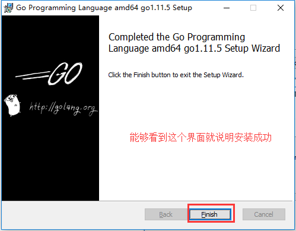
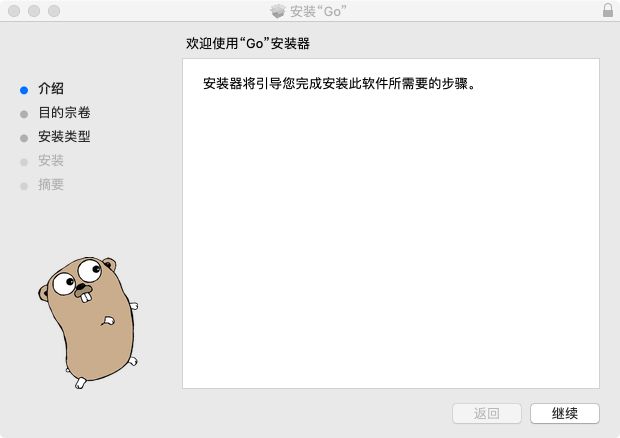
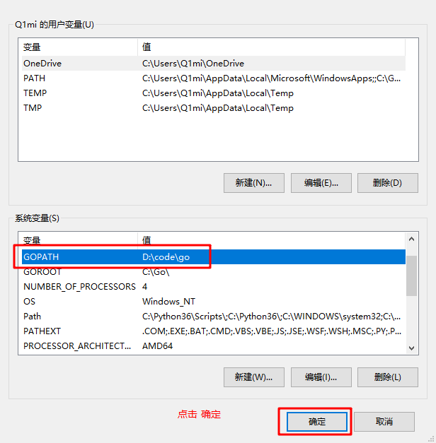
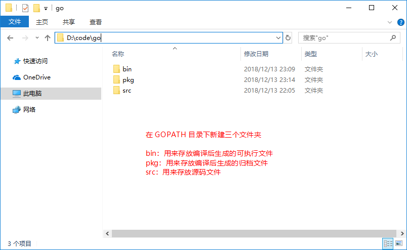

原文连接:https://www.cnblogs.com/qicun/p/11378354.html
一步一步，从零搭建Go语言开发环境。
安装Go语言及搭建Go语言开发环境
下载
下载地址
Go官网下载地址：https://golang.org/dl/
Go官方镜像站（推荐）：https://golang.google.cn/dl/
版本的选择
Windows平台和Mac平台推荐下载可执行文件版，Linux平台下载压缩文件版。
安装
Windows安装
此安装实例以 64位Win10系统安装 Go1.11.5可执行文件版本为例。
将上一步选好的安装包下载到本地。
双击下载好的文件
3.png)

Linux下安装
我们在版本选择页面选择并下载好go1.11.5.linux-amd64.tar.gz文件：
wget https://dl.google.com/go/go1.11.5.linux-amd64.tar.gz
将下载好的文件解压到/usr/local目录下：
mkdir -p /usr/local/go # 创建目录
tar -C /usr/lcoal/go zxvf go1.11.5.linux-amd64.tar.gz. # 解压
如果提示没有权限，加上sudo以root用户的身份再运行。执行完就可以在/usr/local/下看到go目录了。
配置环境变量： Linux下有两个文件可以配置环境变量，其中/etc/profile是对所有用户生效的；$HOME/.profile是对当前用户生效的，根据自己的情况自行选择一个文件打开，添加如下两行代码，保存退出。
export GOROOT=/usr/local/go
export PATH=$PATH:$GOROOT/bin
修改/etc/profile后要重启生效，修改$HOME/.profile后使用source命令加载$HOME/.profile文件即可生效。 检查：
~ go version
go version go1.11.5 linux/amd64
Mac下安装
下载可执行文件版，直接点击下一步安装即可，默认会将go安装到/usr/local/go目录下。

检查
上一步安装过程执行完毕后，可以打开终端窗口，输入go version命令，查看安装的Go版本。
配置GOPATH
GOPATH是一个环境变量，用来表明你写的go项目的存放路径（工作目录）。
GOPATH路径最好只设置一个，所有的项目代码都放到GOPATH的src目录下。
Linux和Mac平台就参照上面配置环境变量的方式将自己的工作目录添加到环境变量中即可。 Windows平台按下面的步骤将D:\code\go添加到环境变量：
6.png)
7.png)
8.png)
9.png)


在 Go 1.8 版本之前，GOPATH环境变量默认是空的。从 Go 1.8 版本开始，Go 开发包在安装完成后会为 GOPATH设置一个默认目录，参见下表。
GOPATH在不同操作系统平台上的默认值
| 平台 | GOPATH默认值 | 举例 |
|---|---|---|
| Windows | %USERPROFILE%/go | C:\Users\用户名\go |
| Unix | $HOME/go | /home/用户名/go |
同时，我们将 GOROOT下的bin目录及GOPATH下的bin目录都添加到环境变量中。
Go项目结构
在进行Go语言开发的时候，我们的代码总是会保存在$GOPATH/src目录下。在工程经过go build、go install或go get等指令后，会将下载的第三方包源代码文件放在$GOPATH/src目录下， 产生的二进制可执行文件放在 $GOPATH/bin目录下，生成的中间缓存文件会被保存在 $GOPATH/pkg 下。
如果我们使用版本管理工具（Version Control System，VCS。常用如Git）来管理我们的项目代码时，我们只需要添加$GOPATH/src目录的源代码即可。bin 和 pkg 目录的内容无需版本控制。
适合个人开发者
我们知道源代码都是存放在GOPATH的src目录下，那我们可以按照下图来组织我们的代码。
13.png)
目前流行的项目结构
Go语言中也是通过包来组织代码文件，我们可以引用别人的包也可以发布自己的包，但是为了防止不同包的项目名冲突，我们通常使用顶级域名来作为包名的前缀，这样就不担心项目名冲突的问题了。
因为不是每个个人开发者都拥有自己的顶级域名，所以目前流行的方式是使用个人的github用户名来区分不同的包。
14.png)
举个例子：张三和李四都有一个名叫studygo的项目，那么这两个包的路径就会是：
import "github.com/zhangsan/studygo"和
import "github.com/lisi/studygo"以后我们从github上下载别人包的时候，如：
go get github.com/jmoiron/sqlx那么，这个包会下载到我们本地GOPATH目录下的src/github.com/jmoiron/sqlx。
适合企业开发者
15.png)
Go开发编辑器
Go采用的是UTF-8编码的文本文件存放源代码，理论上使用任何一款文本编辑器都可以做Go语言开发，这里推荐使用VS Code和Goland。 VS Code是微软开源的编辑器，而Goland是jetbrains出品的付费IDE。
我们这里使用VS Code 加插件做为go语言的开发工具。
VS Code介绍
VS Code全称Visual Studio Code，是微软公司开源的一款免费现代化轻量级代码编辑器，支持几乎所有主流的开发语言的语法高亮、智能代码补全、自定义热键、括号匹配、代码片段、代码对比 Diff、GIT 等特性，支持插件扩展，支持 Win、Mac 以及 Linux平台。
虽然不如某些IDE功能强大，但是它添加Go扩展插件后已经足够胜任我们日常的Go开发。
下载与安装
VS Code官方下载地址：https://code.visualstudio.com/Download
三大主流平台都支持，请根据自己的电脑平台选择对应的安装包。
第一个Go程序
Hello World
现在我们来创建第一个Go项目——hello。在我们的GOPATH下的src目录中创建hello目录。
在该目录中创建一个main.go文件：
1 package main // 声明 main 包，表明当前是一个可执行程序
2
3 import "fmt" // 导入内置 fmt 包
4
5 func main(){ // main函数，是程序执行的入口
6 fmt.Println("Hello World!") // 在终端打印 Hello World!
7 }go build
go build表示将源代码编译成可执行文件。
在hello目录下执行：
go build或者在其他目录执行以下命令：
go build hellogo编译器会去 GOPATH的src目录下查找你要编译的hello项目
编译得到的可执行文件会保存在执行编译命令的当前目录下，如果是windows平台会在当前目录下找到hello.exe可执行文件。
可在终端直接执行该hello.exe文件：
d:\code\go\src\hello>hello.exe
Hello World!我们还可以使用-o参数来指定编译后可执行文件的名字。
go build -o heiheihei.exego install
go install表示安装的意思，它先编译源代码得到可执行文件，然后将可执行文件移动到GOPATH的bin目录下。因为我们的环境变量中配置了GOPATH下的bin目录，所以我们就可以在任意地方直接执行可执行文件了。
跨平台编译
默认我们go build的可执行文件都是当前操作系统可执行的文件，如果我想在windows下编译一个linux下可执行文件，那需要怎么做呢？
只需要指定目标操作系统的平台和处理器架构即可：
SET CGO_ENABLED=0 // 禁用CGO
SET GOOS=linux // 目标平台是linux
SET GOARCH=amd64 // 目标处理器架构是amd64然后再执行go build命令，得到的就是能够在Linux平台运行的可执行文件了。
Mac 下编译 Linux 和 Windows平台 64位 可执行程序：
CGO_ENABLED=0 GOOS=linux GOARCH=amd64 go build
CGO_ENABLED=0 GOOS=windows GOARCH=amd64 go buildLinux 下编译 Mac 和 Windows 平台64位可执行程序：
CGO_ENABLED=0 GOOS=darwin GOARCH=amd64 go build
CGO_ENABLED=0 GOOS=windows GOARCH=amd64 go buildWindows下编译Mac平台64位可执行程序：
SET CGO_ENABLED=0
SET GOOS=darwin
SET GOARCH=amd64
go build现在，开启你的Go语言学习之旅吧。人生苦短，let’s Go.